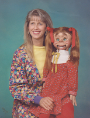

Ashes to ashes..
7/20/2012
From Sandra Sladkey
* * * * *
From Mr. D: Losing anything to fire or storm is tragic. Somehow vent figures that are destroyed seem a greater loss than some other possessions. It appears your Lacey Lu was a female adaptation of the figure, Clipper. I think I could build a similar likeness, but since it would not be an exact duplicate, your dog need not fear giving up her identity! A new name is a good idea anyway. I could not get started seriously until this Fall. I'm taking a bit of a break from figure building for the Summer.
{kind=link}

Do you still make figures? You made my Lacey Lu back in the 1980s. She was consumed, along with everything else I owned, in a wildfire in the mountains of San Diego in 2003. It still breaks my heart today to think I didn't think to bring her along as we fled. Our photos were the one thing, besides living things, that we brought with us to save from the fire. I'll attach a photo (below) of what our lives looked like after the fire! So, the question is, "are you still making figures?" I'm excited about the possibility of having Lacey come to life again, except I would have to name her something else because I now have a little dog named Lacey!* * * * *
From Mr. D: Losing anything to fire or storm is tragic. Somehow vent figures that are destroyed seem a greater loss than some other possessions. It appears your Lacey Lu was a female adaptation of the figure, Clipper. I think I could build a similar likeness, but since it would not be an exact duplicate, your dog need not fear giving up her identity! A new name is a good idea anyway. I could not get started seriously until this Fall. I'm taking a bit of a break from figure building for the Summer.
{kind=link}